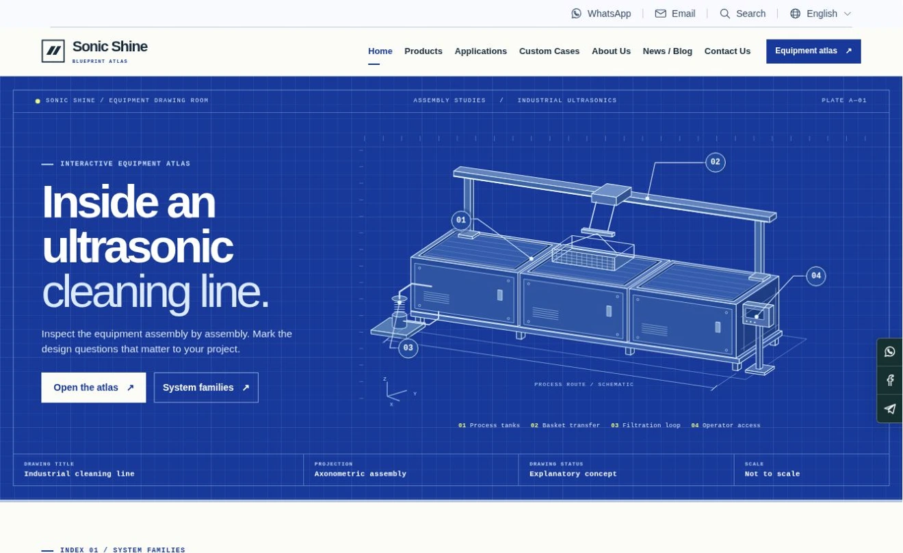
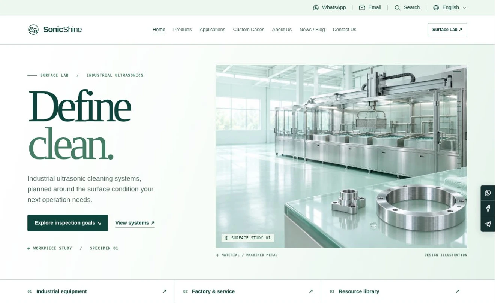
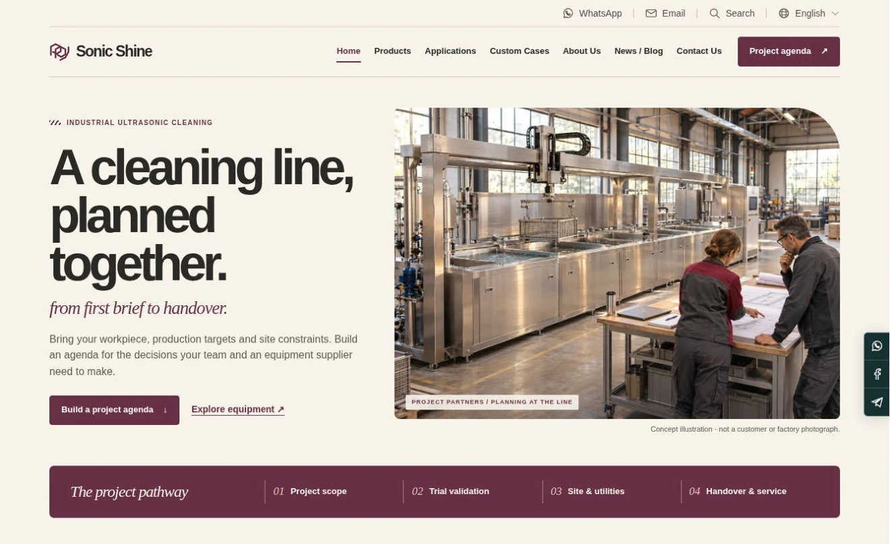
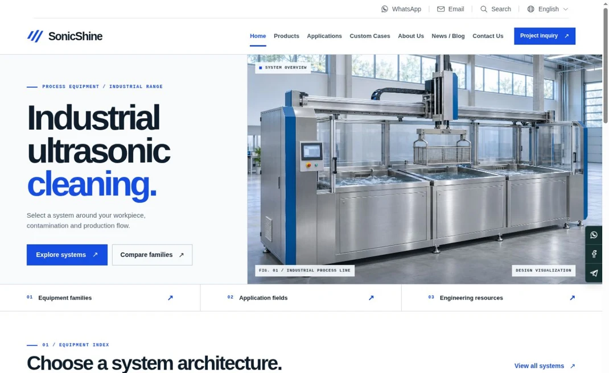
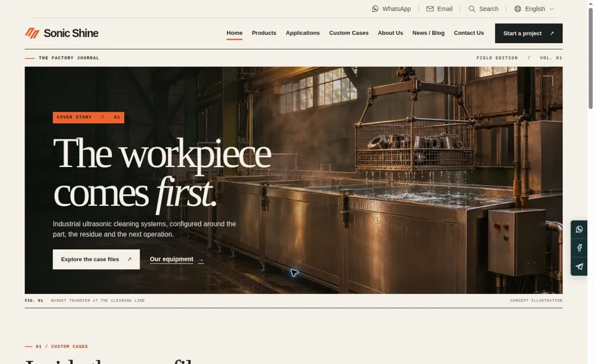
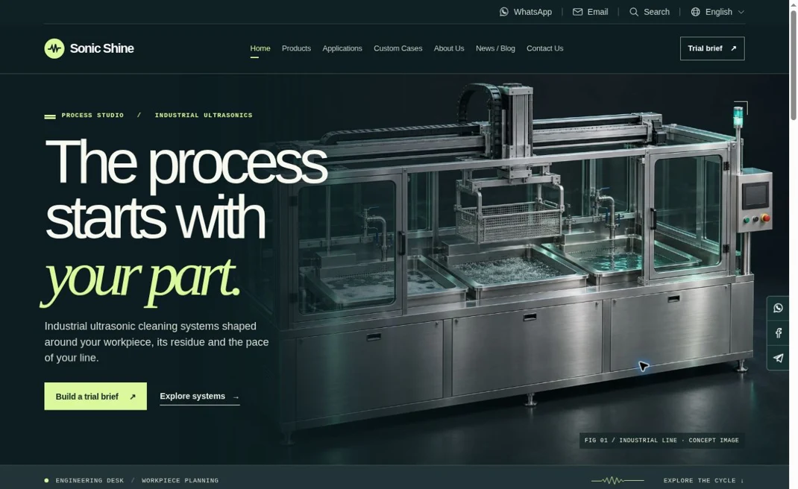

CONCEPT 04SONIC SHINE / INDUSTRIALNEW
D / Blueprint Atlas
Read an annotated machine drawing and choose the components to discuss.
Inspect parts → Select questions → Enquire
Explore concept D↗Six industrial equipment websites, each available in English and Simplified Chinese. Use the language menu on any page to open the same content in the other language.

CONCEPT 04Read an annotated machine drawing and choose the components to discuss.

CONCEPT 05Define the surface condition you need, then build a checklist for the trial.

CONCEPT 06Plan an industrial cleaning project by stage and build a supplier meeting agenda.

CONCEPT 01Explore equipment families and compare the configurations before discussing a project.

CONCEPT 02Start from a workpiece problem and follow the proposed cleaning process.

CONCEPT 03Turn material, contamination and production requirements into a trial brief.
Use a machined part with residual cutting oil and blind bores. Compare equipment, look up cases, brief a trial, inspect components, define acceptance checks or build a meeting agenda.
Select two concepts to compare their buyers, visual language, tools, supporting content and paths to an engineering inquiry.
Industrial equipment only. Each concept has seven main navigation items; Service is part of About Us, and resources are reachable from product, news or footer links.
Equipment imagery and project scenarios illustrate design choices. Approved photographs, confirmed models and substantiated project evidence are needed for launch.
Both languages support validation, editing and local export of an inquiry draft. A live inbox, operations mailbox and official brand contact accounts are launch integrations.
All six websites are available in English and Simplified Chinese. Switch from any page to its counterpart. Search, interactive tools and the three technical PDFs follow the selected language.
This is a private design review. Final domain, corporate identity and release ownership remain to be confirmed; the existing corporate site is unchanged.
Prioritize the main system family, key industries and evidence-backed workpiece cases. Give search and social visitors a clear next step to discuss their application.